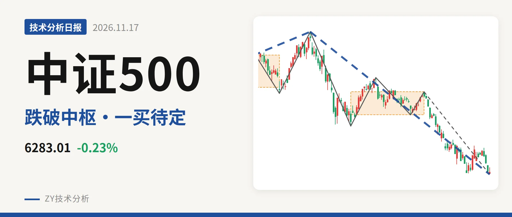

中证500｜日线新低暂成一买，结构仍在下跌段

最近日线中枢 7451.12—7922.62点，收盘位于中枢之下
一句话：2026年7月1日以来日线下跌未结束，11月17日一买暂定。
🧱 走势结构：2026年7月1日以来日线下跌段还未结束
当前中证500处于2026年7月1日以来的日线下跌线段中，不是中枢震荡。更大级别看，2024年2月5日至2026年7月1日的上涨把指数从4281.24点推到9147.56点，涨113.7%；2026年7月1日以来的下跌段最低到6234.40点，跌31.8%，最新收于6283.01点。该下跌日线线段内部已有5笔，到11月17日仍没有结束信号。2025年10月9日至2025年11月24日下跌线段结束后，2025年11月24日至2026年7月1日的上涨线段高点没有延续，7月1日一卖后结构转弱。

🧭 中枢与位置：收在最近日线中枢下方15.7%
最新收盘6283.01点低于最近日线笔中枢下沿7451.12点，距离下沿约15.7%。该中枢由7月30日至9月22日的反弹构成，区间7451.12—7922.62点，中轴7686.87点。和前一个1月26日至6月8日的中枢8014.66—8671.35点相比，日线中枢已经下移。下方更早的2022年4月27日至2023年8月4日线段中枢上沿在6263.16点，当前收盘仍在该上沿上方约20点。这说明日线位置弱于最近中枢，但还没有远离更大级别中枢上沿。
🕯️ 买卖点：上方卖点一个比一个低，11月17日一买暂定
日线笔级别上，2026年7月1日一卖9147.56点、8月18日二卖8211.31点、9月22日类二三卖7922.62点，上方卖点一个比一个低。9月22日以来的下跌笔到11月17日低点6234.40点，被列为日线一买，但这一笔仍在延续，因此只是暂定的一买；后续低点若继续下移，这个一买会随这一笔变化。线段级别上，2025年11月24日三买6797.50点已经被2026年7月1日以来下跌打穿，说明该三买只对应较小级别，没有演化为更大级别的上行。

📏 背驰：面积收缩但DIF仍新低，不是标准底背驰
最关键是2026年7月1日至7月30日与9月22日至11月17日两段下跌笔。前一段绿柱面积2687，DIF低点-285.2；当前下跌笔绿柱面积1835，DIF低点-298.6。价格低点更低，绿柱面积缩小，但DIF低点同步下移，所以只是部分空头动能减弱，不是标准的“新低不新弱”。最新MACD柱为21.1，DIF仍在零轴下方，反弹只是初露。11月17日暂定一买不能直接当作强转折依据。
🔍 关键位置观察：先看7451点和6798点压力，结构仍偏弱
反抽若回不到7451点上方，结构上构成三卖；重新站上7451点，7月30日以来的下跌更可能只是中枢扩展。上方6798点附近是2025年11月24日三买位置，过不去则日线结构没有转强。下方6234点附近是11月17日暂定一买低点，若继续被下移，这个买点不成立。综合看，指数在最近日线中枢下方且买点尚未确认，日线结构偏弱。
⚠️ 本文为基于公开行情数据的缠论技术结构记录，由程序自动计算并生成，仅供学习交流，不构成任何投资建议。市场有风险，投资需谨慎。